Published single-cell RNA-seq datasets, converted to cloud-optimised AnnData-Zarr and browsable in the browser — UMAP or tissue space, cell-type sets and per-gene expression, with no backend server.
44 datasets from 13 publications, 1,326,051 cells in total. Pick a publication to see its datasets.
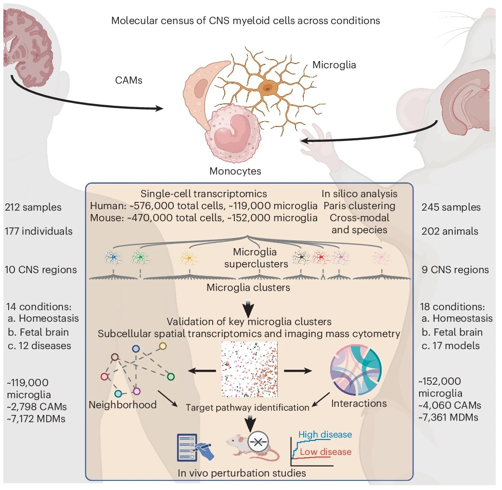
Nature Immunology · 2026
A transcriptomic microglia taxonomy across mouse and human pathologies
CosMx spatial transcriptomics, Cross-species microglia, EAE microglia manipulation, Human brain immune atlas, +4 more
Browse datasets Paper EGA EGAS50000001289 GSE304010 Zenodo 16938034
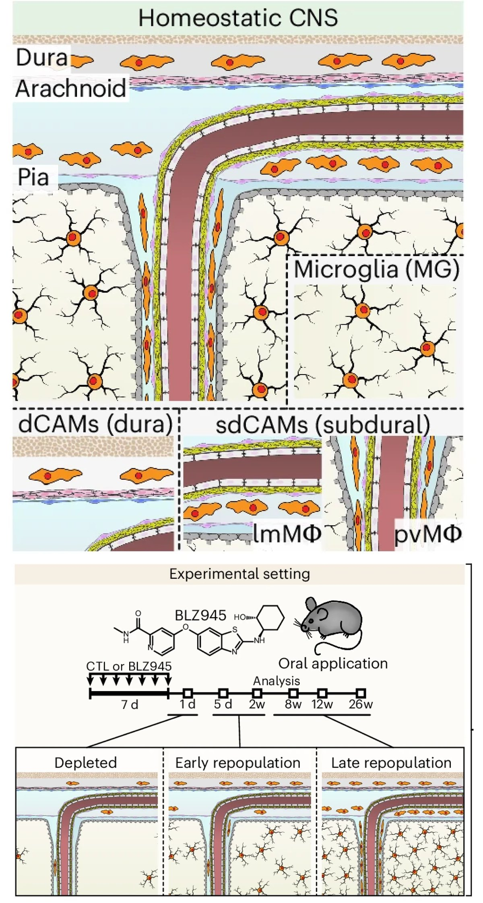
Nature Immunology · 2026
CNS macrophages after injury (Fig. 2), Full scRNA-seq dataset (Fig. 5), Microglia (Fig. 5), scATAC-seq gene activity (Fig. 6), +1 more
Browse datasets Paper GSE318650 GSE295335 GSE294773 GSE318386 GSE318071 GSE318159 GSE294912 GSE295334
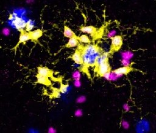
Nature Neuroscience · 2025
Dataset 1, Dataset 2 (with index data)
Browse datasets Paper GSE296025 GSE296026 GSE296027 GSE296028
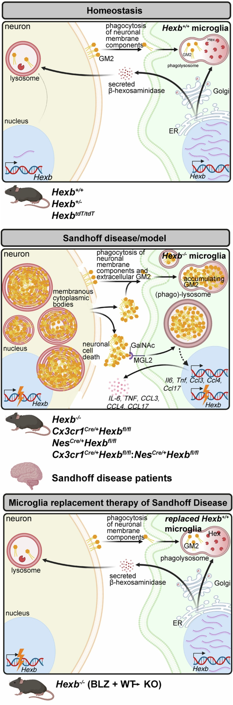
Nature · 2025
Microglia–neuron crosstalk through Hex–GM2–MGL2 maintains brain homeostasis
All cells (Ext. Fig. 5), All cells, Hexb (Fig. 3), Immune cells (Ext. Fig. 5), Immune cells (Fig. 3), +2 more
Browse datasets Paper GSE300762 GSE300356 GSE300357 GSE300355
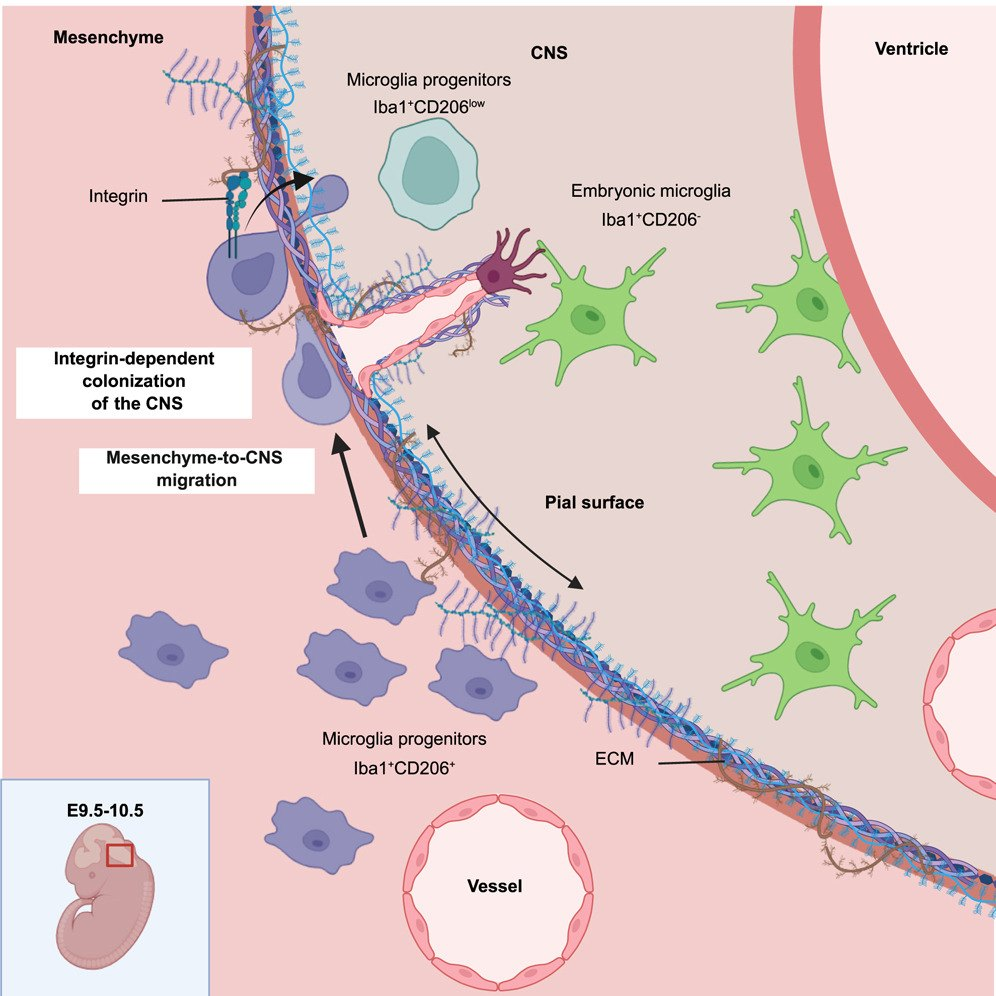
Developmental Cell · 2025
Embryonic microglia progenitors
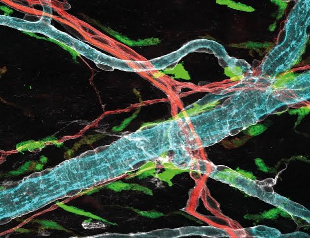
Science Immunology · 2024
Extrasinusoidal macrophages are a distinct subset of immunologically active dural macrophages
Harmony-integrated atlas
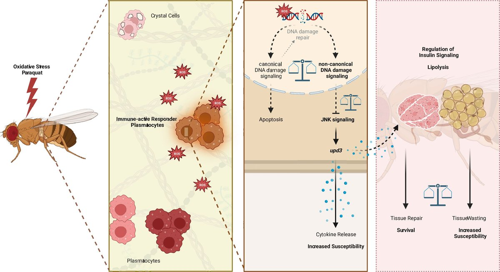
eLife · 2024
Fly immune cells (Fig. 1A), Hemocytes (Fig. 1C)
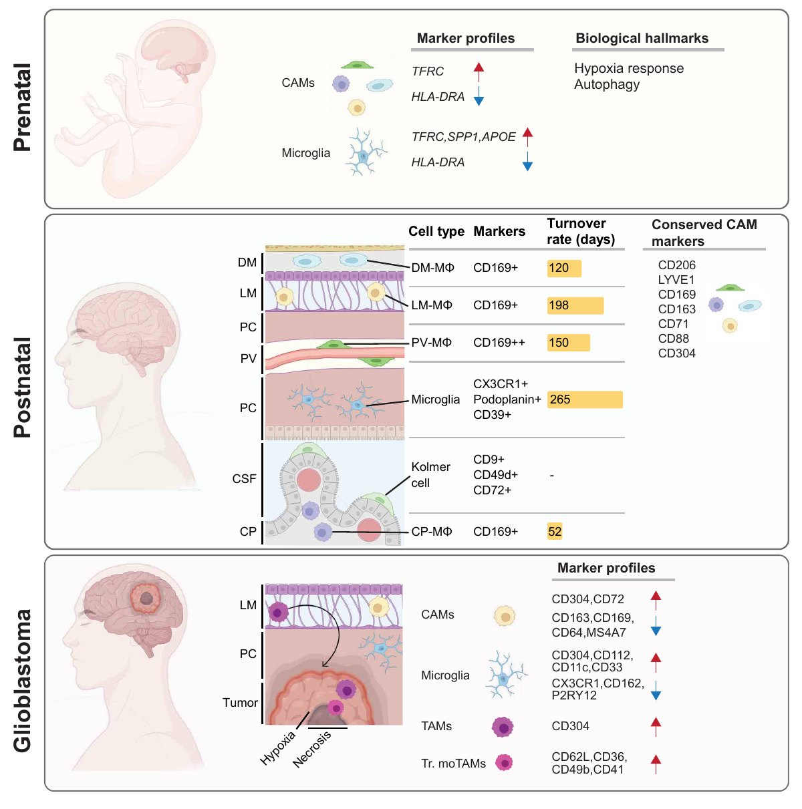
Nature Medicine · 2024
Multiomic spatial landscape of innate immune cells at human central nervous system borders
All cells, FFPE (Fig. E7), CD206-gated CEL-Seq2 controls (Fig. 2), FFPE microglia (Fig. 5i), Fetal reference-mapped cells (Fig. 6g), +4 more
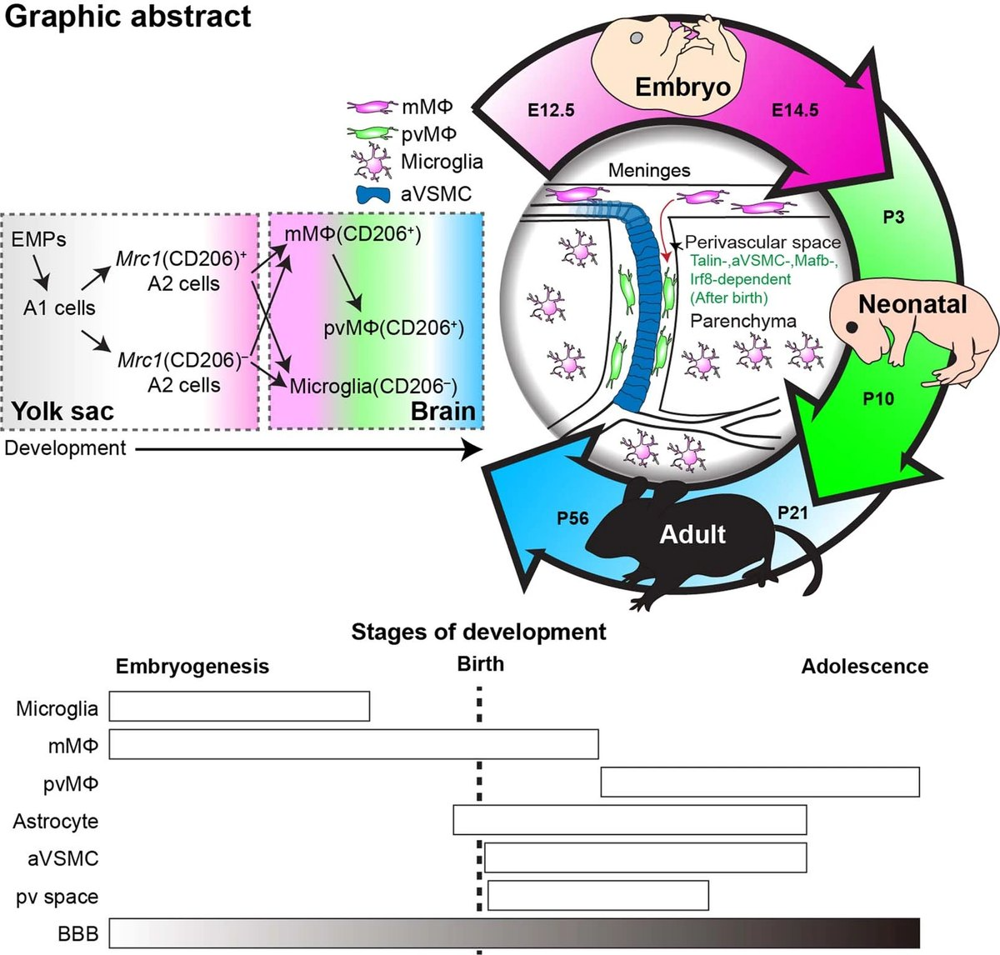
Nature · 2022
Specification of CNS macrophage subsets occurs postnatally in defined niches
Masuda et al. 2022
Browse datasets Paper GSE194432 GSE194433 GSE195437 GSE192510 GSE192511
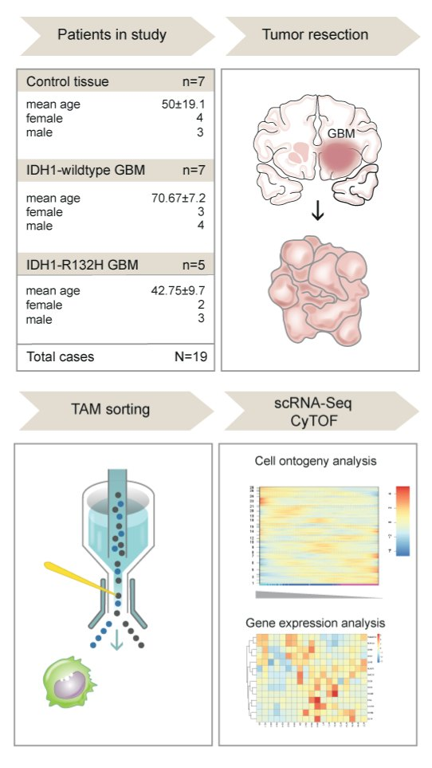
Nature Cancer · 2021
Tryptophan metabolism drives dynamic immunosuppressive myeloid states in IDH-mutant gliomas
10x integration, wild-type and IDH-mutant, Myeloid cells in IDH-mutant glioma
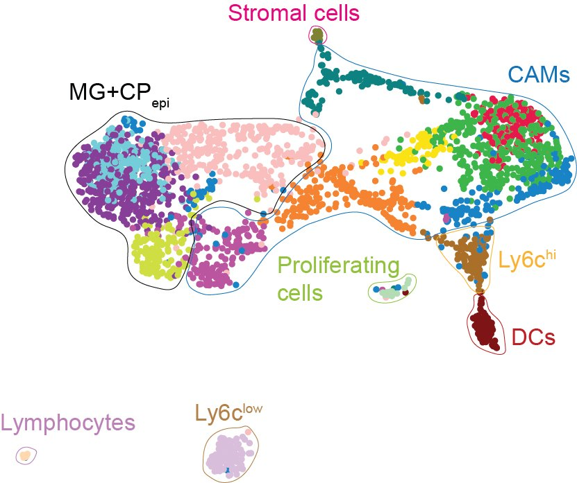
EMBO Journal · 2021
All myeloid cells, Choroid plexus, Meninges, Microglia, +1 more
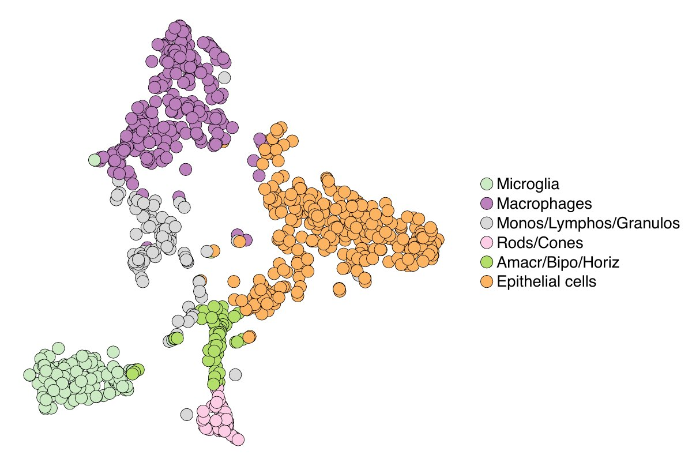
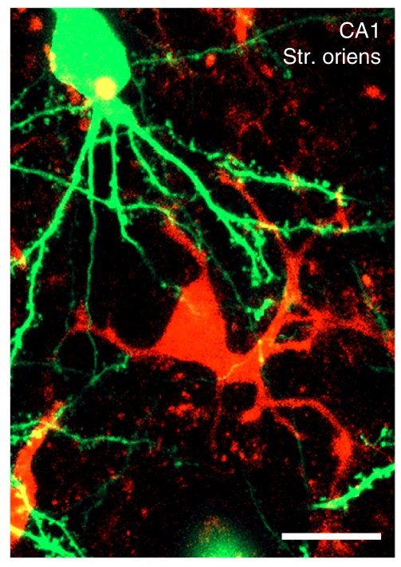
Nature Immunology · 2020
Novel Hexb-based tools for studying microglia in the CNS
Hexb-based microglia atlas
No credentials required. Everything is public and openly licensed (CC-BY-4.0).
aws s3 ls --no-sign-request s3://freburg-immune-data-viewer-544227292049-us-east-1-an/| Path | Contents |
|---|---|
<dataset>.zarr/X | normalised expression, dense, chunked (n_cells, 10) |
<dataset>.zarr/obs | per-cell metadata |
<dataset>.zarr/obsm/X_umap | UMAP embedding (and X_spatial where applicable) |
<dataset>.zarr/var | gene metadata, incl. highly_variable |
configs/ | Vitessce view configs |